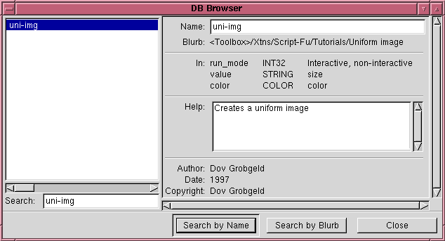
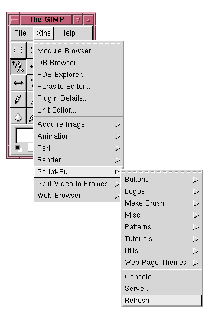
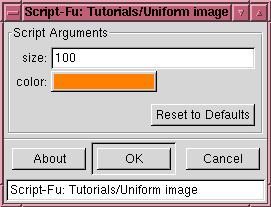

One of the wonderful features of GIMP is that it all its functionality may be accessed through scripting. The major scripting language for the GIMP that has been attached to it today is Scheme. This document will try to be a brief introduction to Scheme, just teaching the essentials in order to write script-fu scripts, without getting into the programming language theory that is so typical of other Scheme references.
Scheme is a lisp variants and all expressions are surrounded by parens. E.g. a list which will calculate the sum of 3 and 4 is written
The + sign is the addition function and 3 and 4 are the first and second parameters to this function. Expressions may be nested, so the expression (3+4)*(5/6) would in Scheme be written
White space has no importance so the above expression may as well be written:
Aside from the four arithmetic functions that are represented through the symbols + - * / there are lots of other functions built into the language. All of them have the form
Additional functions may be defined by the user through the define keyword. E.g. a function that calculates the square value of its single argument may be declared like this
and this function may be called through
Variables may be declared and set through the set! command. (These variables will be global but this should not bother the casual gimp programmer). Here are a couple of assignments:
Lisp and its variants make heavy use of lists. Script-fu is no exception and it uses e.g. a list of three elements to write a RGB color. E.g. the color orange would be written
The ' sign is necessary in order to tell scheme that this is a literal list. If the ' was omitted scheme would try to look up a function with
the name 255 and send it the two parameters 127 and 0, which is obviously not what we wants.
To create a variable called orange with the above value and then set the background color to it we may do
A list in Scheme is always composed of a head and a tail. The head is the first entry in the list, and the tail is the list of the rest of the elements.
This means that the list (255 127 63) really means (255 (127 (63 ()))) but Scheme allows the previous form as a shortcut.
The car function is used to return the head of the list and the cdr (usually pronounced cudder) is used to get the tail of the list.
[The following is a test of the above functions which may interactively be conducted in the Script-Fu console.]
To get the blue component of a color it is necessary to apply the cdr function twice and then the car function.
This is very unconvenient to write. Therefore there have been defined abreviations of the form cadr, cddr, caddr, etc that concatinate the operations described above. The previous expression may therefore much more conveniently be written:
For the Script-Fu writer one of the most important uses of the car function is to access the returned values from the built-in gimp functions. All gimp-functions return a list, and even if the list contains only one element it must be accessed by car. This is e.g. the case for the important functions gimp-new-image and gimp-new-layer used below.
More experienced scheme programmers mostly use local variables instead of the global variables described above.
This is considered better programming practice and this construct should be recognized in order to be able to read others ScriptFu scripts.
Local variables are declared through the the let keyword as in the following example:
Here a and b have a local scope and retain their values only up to the closing paren matching the one before let* .
All functionality of GIMP is available through the procedural database (PDB). Each procedural database function has a corresponding scheme function mapping. E.g.
produces a new gimp image of type RGB and size 100x150.
All teh functions of the PDB may be accessed through the DB browser that is available from the main menu through Xtns -> DB BROWSER....
E.g. the DB Browser entry for uni-img, which we will define in the example below looks like this:

For the Script-Fu programmer this information shows that uni-img may be called with three parameters of the types INT32, STRING and COLOR. The different types will be explained below.
After a function has been written it has to be registered with script-fu before it can be used. This is done through the scheme function script-fu-register. The registering has following purposes:
- Choose the place of the script in the Script-Fu pulldown menus.
- Tell script-fu the type of parameters the script takes and give these parameters default values.
- Register the script as a command in the PDB.
The last point above actually means that a script is from Gimp's viewpoint in no way different from a built-in command or a plugin command.
As long as a command is registered in the PDB it can be called by any script or plugin.
The parameters of script-fu-register may be divided into two groups. The first group of seven parameters must always be given. These are:
- The name of the lisp function.
- The position of the script in the gimp menus.
- A help string describing the function of the script.
- The script author.
- The script copyright.
- Script date.
- List of valid image types for the script. This only has a meaning on scripts operating on images that already exist.
After these seven parameters have been given, follows a list of the parameters required by the script. Each parameter is given as a group of three items:
- The type of the parameter. Valid types are
- SF-COLOR
- An RGB color.
- SF-TOGGLE
- A true or false value.
- SF-IMAGE
- SF-DRAWABLE
- SF-VALUE
- Any scalar value, string, integer, or floating point.
- A label for script-fu to display when querying for the parameter.
- A default value.
The following script uni.scm receives two parameter from the user, the size of the image, and a color and goes on to produce a uniform image of the requested size and the requested color. Not very useful, but it shows the essential steps in producing a script-fu script.
To test the script save it in $HOME/.gimp-1.2/scripts/uni.scm and then select Xtns/Script-Fu/Refresh:

The script Uniform image should now appear in the pulldown menu Xtns/Script-Fu/Tutorials/Uniform image. Selecting this script results in the following popup:

Accepting these default parameters through the OK button gives us the following new image:

It is also possible to access this script through the Script-Fu console by typing the command
In the uni-img script it was placed under Xtns/... in the main Gimp window. This is done to create a new image that is independant of earlier images.
It is also possible to create a script which works on an already existing image. If in script-fu-register as the second argument is written:
<Image>/Script-Fu/...
then the script will be available through the gimp menu that is launched by the right mouse button over an image.
Such script must also have as their first and second argument a SF-IMAGE and a SF-DRAWABLE.
Here is an example script which copies the current layer to a new layer, blurs it and inverts it.
In uni-img we called the procedure gimp-edit-fill to fill the whole image. Looking at the info for gimp-edit-fill in the DB browser we find the following:
| ||||||||||||||||||||
Thus, if we have a selection active when the gimp-edit-fill is called only the selection is painted. There are lots of ways of choosing a selection as can be seen when searching for a ``select'' in the PDB. We will use gimp-rect-select, whose entry in the PDB looks as follows:
| ||||||||||||||||||||||||||||||||||||||||||||
A simple use of this function which selects the rectangle (x,y,width,height)=(0,25,100,50), paints this region blue, and releases the selection looks as follows:
The only looping construct that exists in Script-Fu is while
[Note: this constraint is due to the current scheme interpreter SIOD used for Script-Fu. Once the scheme interpreter as planned is changed to Guile, more looping constructs will probably be added.] The while loop looks as follows:
Here's an example which draws horizontal lines, 16 pixels high, on an image:
When pasting an image from the clipboard, or when creating text in a a drawable, the result is not put directly in the drawable. Instead it is put into a special temporary layer known as a floating selection. The floating selection may be manipulated in several ways, and finally it is merged into its associated layer, a process known as anchoring.
When creating text through the gimp-text command, the text is always put into a temporary layer. This temporary layer then has to be anchored. Here is an example of creating some text which is pasted into the current drawable:
This script shows another feature we haven't mentioned before. The possibility of creating an undo group. All the commands between the commands gimp-undo-push-group-begin and gimp-undo-push-group-end are undone together if the undo command is issued.
To copy a selection, the command gimp-edit-copy is used. It places a copy of the selection contents in the cut-buffer.
The contents of the cut-buffer may then be pasted into a layer, the same layer or another one, and it is then pasted as a floating layer.
In the following example the selection is copied, pasted into the same layer, offset a fixed distance, finally anchored.
Try it by drawing a small blob in the middle of the image, select the blob, and then call this script.
The original tutorial can be found here.